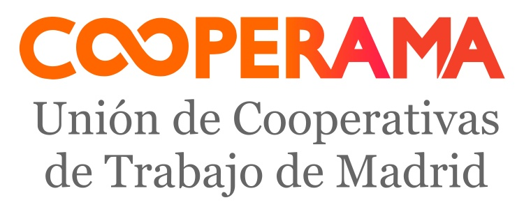
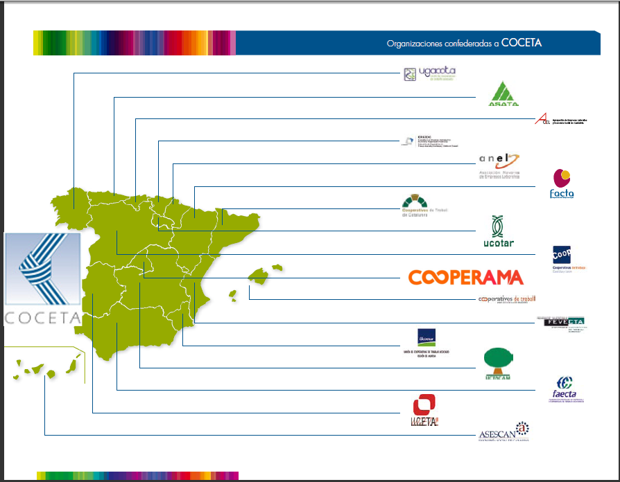
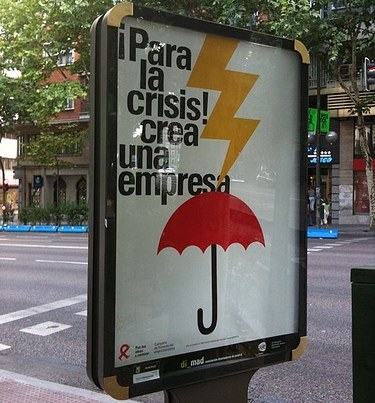
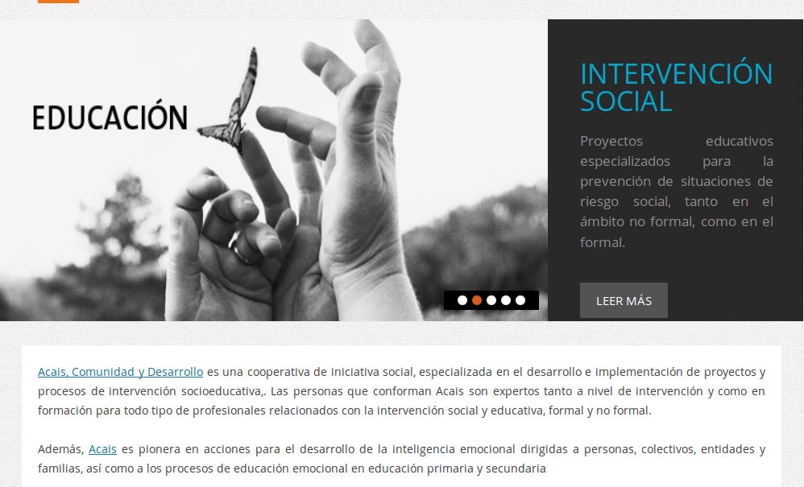
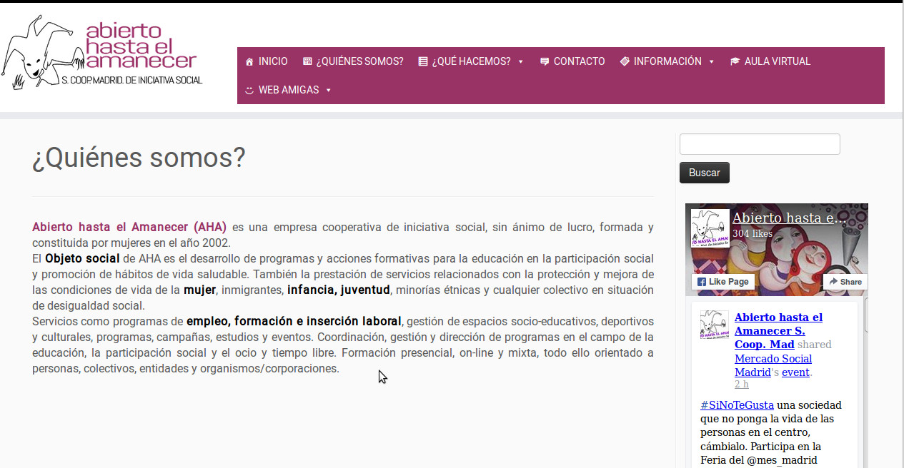
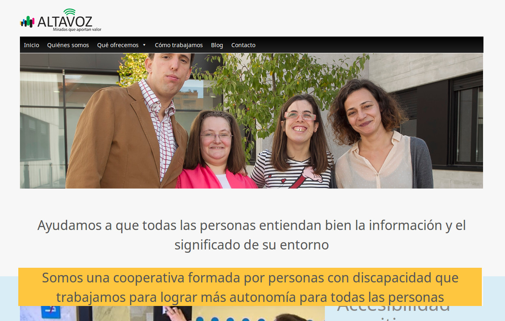
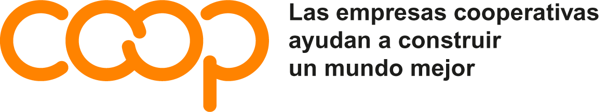

Cooperativismo de Trabajo
Master De Acción Solidaria Internacional y De Inclusión Social
Esta presentación está disponible en: github.com/damateos/pre_cooperativas_master_c3
Usa las flechas del cursor para navegar y ESC para una visión generalPresentación
David Mateos Pascual - contacto@cooperama.coop

Presentación
¿Qué son las cooperativas?
Definición de cooperativa
Una cooperativa es una asociación autónoma de personas que se han unido voluntariamente para hacer frente a sus necesidades y aspiraciones económicas, sociales y culturales comunes por medio de una empresa de propiedad conjunta y democráticamente controlada.
Declaración de Identidad Cooperativa. II Asamblea General de la ACI. Manchester, 1995.
Tipos de coopertivas
- Cooperativas Agrarias.
- Cooperativas de crédito.
- Cooperativas de vivienda.
- Cooperativas de consumidores.
- Cooperativas de enseñanza.
- Cooperativas integrales.
Cooperativas de Trabajo
“Son cooperativas de trabajo las que tienen por objeto proporcionar a sus socios puestos de trabajo, mediante su esfuerzo personal y directo, a tiempo parcial o completo, a través de la organización en común de la producción de bienes o servicios para terceros”. Ley 4/1999 de Cooperativas de la Comunidad de Madrid
Asociación
Conjunto de personas físicas o jurídicas que se unen y ponen medios y conocimiento para conseguir fines de interés general
Principios cooperativos
- Adhesión voluntaria y abierta.
- Gestión democrática por parte de los socios (un socio, un voto).
- Participación económica de los socios.
- Autonomía e independencia.
- Educación, formación e información.
- Cooperación entre cooperativas.
- Interés por la comunidad.
¿dónde viene esto?
Los poderes públicos promoverán eficazmente las diversas formas de participación en la empresa y fomentarán, mediante una legislación adecuada, las sociedades cooperativas. También establecerán los medios que faciliten el acceso de los trabajadores a la propiedad de los medios de producción.
Constitución Española. Artículo 129.2
Emprendiendo

Emprendiendo
... en colectivo
¿Todo es bonito?
- Toma de decisiones en conjunto.
- Participación vs coordinación/liderazgo.
- Especialización.
- Gestionar el crecimiento y la participación.
- Visibilización cooperativas. Desconocidas para el gran público.
¿En qué sectores?
... en cualquiera:
- Asesorías y gestorías. Abogados/as.
- Medio ambiente.
- Diseño y comunicación.
- Peridismo.
- Desarrollo de software.
- Jardinería.
- Consultoría social.
- ...
¿... y en lo nuestro?
¡También!:
Iniativas de "allá", iniciativas de "aca", iniciativas en red.
- Iniciativa social.
- Intervención social.
- Proyectos de cooperación al desarrollo.
- Empoderamiento de mujeres en paises del Sur.
- ...etc
Ejemplos Coopemus
La Cooperativa Agroindustrial de Mujeres de Somotillo –COOPEMUS-, en Nicaragua, viene trabajando desde hace más de 15 años en la producción del anacardo (marañón). La cooperativa destaca por la calidad de su producto, elaborado de manera orgánica. Gracias al apoyo de diversas entidades, entre ellas la cooperativa Espanica ha ido fortaleciéndose, avanzando paralelamente en el progresivo empoderamiento de sus socias.Ejemplos
Consolidación del desarrollo cooperativo y comercial en las regiones sureste y suroeste en la República DominicanaVídeo: "COCETA. Proyecto de Cooperación al Desarrollo en República Dominicana "
Ejemplos - Acais
Ejemplos - Abierto hasta el amanecer
Ejemplos - Altavoz
Cooperativas: trabajo en red
Recortes de prensa
Las cooperativas privilegian la creación de puestos de trabajo en tiempos de bonanza, y minimizan su destrucción en tiempos de crisis.
Alejandro Bolaños. El País.
Recortes de prensa
“En las cooperativas de trabajo europeas hay mayor igualdad de género que en el resto de las empresas”
COCETA. 18/10/2012
Recortes de prensa
[...] los socios de las 110 cooperativas de la Corporación Mondragón fueron más allá: aprobaron constituir un fondo de 70 millones para financiar el plan de viabilidad de Fagor, la cooperativa de electrodomésticos, que perdió 89 millones el año pasado. No solo se bajan el sueldo los trabajadores de Fagor (un 6,5%), también lo hacen los trabajadores del resto de cooperativas del grupo guipuzcoano (un 1% menos), que además destinarán parte de sus beneficios a este fondo. Todo por evitar despidos.
El País. 25/5/2013
Recortes de prensa
Mondragón recoloca a 857 socios de Fagor.
Mondragón recalca que las empresas del grupo "reafirman su plena confianza en el modelo cooperativo, en el que valores como la solidaridad, la participación y la intercooperación son elementos diferenciadores que permiten actuar de forma eficiente e inmediata en la búsqueda de soluciones compartidas para el colectivo de desempleados".
Expansión . 26/03/2014
Recortes de prensa
“[...]la propiedad de la empresa se encuentra vinculada a sus trabajadores y trabajadoras. Este aspecto resulta fundamental para entender un modelo empresarial que se encuentra orientado a la generación de empleos de calidad para las personas implicadas en la actividad productiva, y no a la generación de beneficio empresarial.”
Iñigo Bándres y Fernando Sabín. Diagonal, 21/05/2013 04/12/2012
Recortes de prensa
“Las cooperativas crean más de 8.000 puestos de trabajo en el primer semestre de 2012”
COCETA. 04/12/2012
Recortes de prensa
“ Si se considera el periodo comprendido entre marzo de 2012 y el mismo mes de 2008 se observa que el empleo en las cooperativas ha caído un 9,6%, lo que represneta un ritmo mucho menor que las pérdidas sufridas por los asalariados del sector privado en los mismos años, que vieron reducir su número en un 19,5%.”
Articulo de Andreu Missé. 22/06/2012
Pasos tramitación
Para la creación de una Cooperativa de Trabajo

cooperama.coop